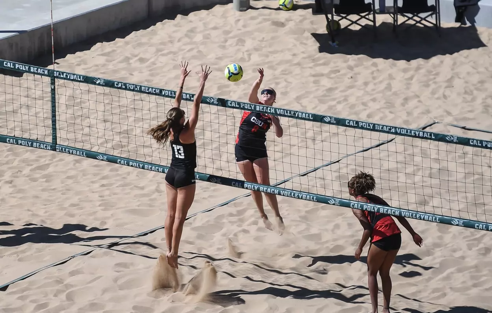

Beach volleyball is the other popular form of volleyball. It is played in the sand; either at the beach or in sand pits. Along with indoor, beach is also a popular Olympic sport.

The biggest difference between beach and indoor is the number of players. Indoor volleyball is played in a team of 6, while beach volleyball is played as a pair. This gives each player many more touches and really refines their skills.
As is made obvious by the name of the sport, beach volleyball is played on sand, rather than on court/floor. This makes movement harder and slower, which changes your playing style greatly.
Although beach and indoor are both volleyball, and utilize classic volleyball skills like passing, setting, hitting, serving, and blocking, some skills can differ between the two sports. For example, setting in beach must be smooth, meaning the ball must not spin after leaving the player's hands.
In my personal opinion, indoor volleyball relies more on power and skill, while beach volleyball is about strategy. For example, a successful beach volleyball player scores points by placing the ball where is the other team is not, even if they are not necessarily super powerful.